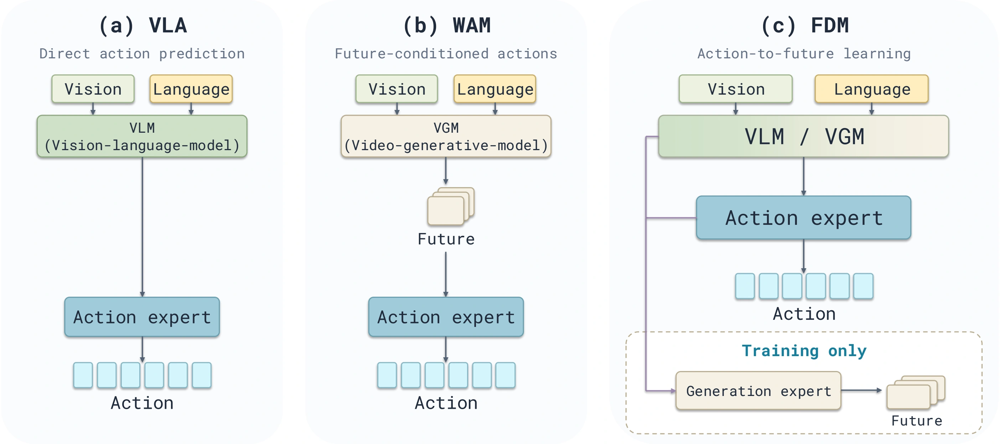
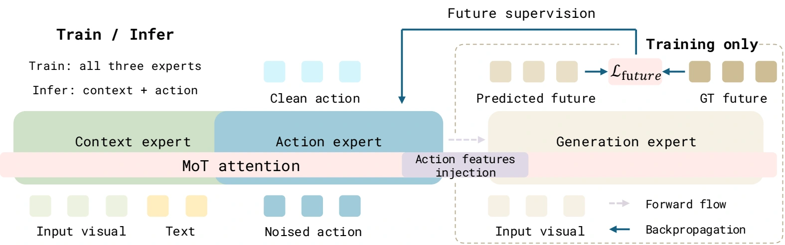
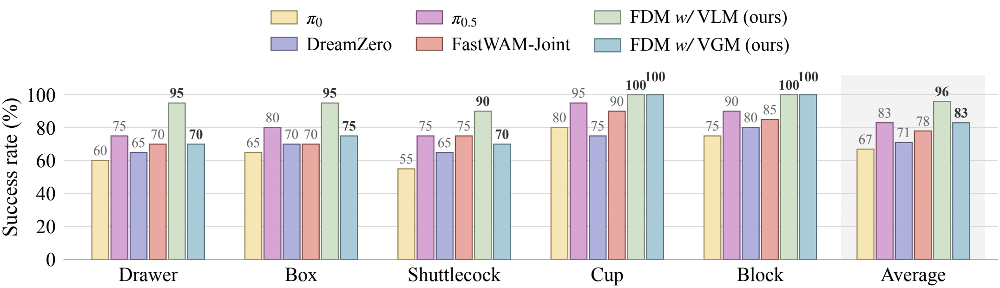

Forward
Dynamics Model
Learn from the future.
Act in the present.
A robot policy that learns from what happens next, without generating the future at inference.
Video transcript
FDM learns robotic actions with supervision from future world states. Unlike future-conditioned actions, FDM predicts future states from action features. During training, future prediction errors backpropagate through action features into the policy. At inference, FDM uses the current observation and instruction, skipping future generation.
The final sequences compare FDM w/ VLM, FDM w/ VGM, π₀.₅, and FastWAM-Joint on a dual-arm ARX-X5: drawer packing, box packing and closing, shuttlecock insertion, paper-cup stacking, and block stacking. All five embedded experiment videos play in full at 1× speed. Read the full English transcript.
1 Fudan University2 Shanghai Innovation Institute3 Imperial College London4 University of Surrey
What if actions
came before the future?
Future world states are a rich learning signal. FDM uses them to train action features, while keeping predicted futures out of the action path.

VLA
Predict actions from observations and language, without explicit future-state supervision.
Future-conditioned WAM
Generate futures to predict actions. Visual prediction errors can affect the policy.
FDM Our approach
Predict futures from action features. Learn from future states; deploy with action-only inference.
A learning signal.
Not an inference dependency.
Three expert roles, one directional connection. The future-prediction loss flows back through the features that produce actions.
Context expert
Understand the scene
and the task.
Action expert
Predict the robot’s
next actions.
Generation expert
Predict the consequences
from action features.
Train jointly with action imitation and future prediction. Asymmetric attention blocks future information from reaching actions, including through context.
Explore the full MoT pipeline

One principle.
Two backbone families.
FDM w/ VLM
A π₀.₅ / PaliGemma policy with direct regression of future-image latents. One future image per camera view, supervised with MSE.
VLM implementationFDM w/ VGM
A Wan2.2 video backbone with flow matching on future-video latents. Current-observation processing remains in the action path.
VGM implementationLearning that carries
into the real world.
Evaluated in simulation and on a dual-arm ARX-X5 robot. Results below are reported in the paper.
LIBERO average success
FDM w/ VLM · four task suites
Real-world success gain
Up to 13 percentage points over compared baselines
Faster action inference
FDM w/ VGM vs. FastWAM-Joint · one H100
See benchmark results and inference latency
| Model | LIBERO average | RoboTwin clean | RoboTwin randomized | RoboTwin average |
|---|---|---|---|---|
| FDM w/ VLM | 99.4 | 81.54 | 80.86 | 81.20 |
| FDM w/ VGM | 98.1 | 88.84 | 89.62 | 89.23 |
Action-chunk latency on one H100: π₀.₅ 203.77 ms; FDM w/ VLM 202.98 ms; FastWAM-Joint 446.55 ms; FDM w/ VGM 253.45 ms. Comparisons use matched settings within each backbone family.
See the policies in action.
Five manipulation tasks. Four methods. Three camera views. Explore the original real-robot recordings side by side.
Place the objects in the drawer and close it.
Select a task, then play the four recordings together.
Each video combines a 640 × 480 third view above two 320 × 240 wrist views. All views start together; shorter recordings hold their final frame. Displayed duration is the recording length, not model inference latency. Individual clips illustrate behavior; aggregate success uses 20 trials per method per task.
View aggregate real-robot success rates

Build on FDM.
Code, training configurations, and evaluation instructions are available in the repository.
View on GitHubCitation
@misc{ma2026forward,
title = {Forward Dynamics Model},
author = {Ma, Zipei and Jiang, Junzhe and
Zhang, Jiahui and Zhang, Juntong and
Gu, Chun and Zhang, Bozhou and
Deng, Jiankang and Zhu, Xiatian and Zhang, Li},
year = {2026},
url = {https://github.com/LogosRoboticsGroup/FDM}
}